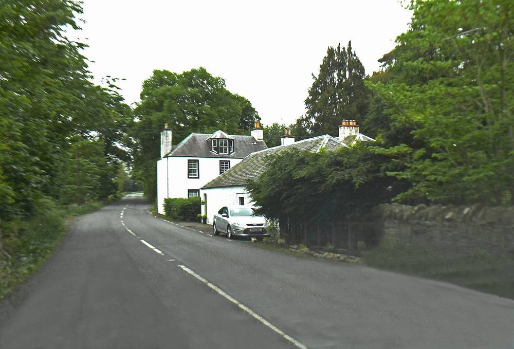

스코틀랜드 화이트로 브레 육상풍력, 지역에 공동체이익기금 연 28만5,000파운드·주민 지분 매입 기회 약속…연내 계통 연결

Thrive Renewables·TopCashback 합작사 소유, 연 최대 14만9,400MWh 생산 전망…차액계약 7차 입찰 낙찰 뒤 SmartestEnergy와 전력구매계약, 지분 규모·시기는 아직 안 나와
스코틀랜드 보더스 트위즈뮤어 근처에 짓고 있는 화이트로 브레(Whitelaw Brae) 육상풍력단지가 지역에 해마다 28만5,000파운드의 공동체이익기금을 내고, 지역 공동체에 단지 지분을 살 기회를 주기로 약속했다. 단지는 재생에너지 투자사 Thrive Renewables와 TopCashback Group의 합작사 Fair Play Clean Energy Limited가 소유하며, 가동되면 해마다 최대 14만9,400MWh의 전기를 생산할 전망이다. 화이트로 브레는 영국 정부의 차액계약(CfD) 7차 입찰에서 낙찰됐고, 이번에 전력회사 SmartestEnergy와 차액계약에 연계된 전력구매계약(PPA)을 맺었다. 단지는 마지막 공사 단계에 있으며 연내 계통 연결을 시작해 최소 30년 동안 전기를 만들 계획이고, 토종 나무를 심고 트위드강 탐방로와 이어지는 산책로도 낸다. 다만 주민이 살 수 있는 지분의 규모와 가격, 시기는 아직 공개되지 않았다.
시민에너지 관점
최근 영국 하원에 제출된 에너지 독립 법안은 지역 지분 제안 대상을 1MW 이상 사업으로 넓힐 수 있게 했고, 화이트로 브레의 지분 약속은 그 흐름이 이미 개별 사업에도 스며들고 있음을 보여 준다. 해마다 28만5,000파운드의 기금이면 충분하지 않느냐는 시각도 있지만, 기금은 사업자가 정한 몫을 받는 것이고 지분은 주민이 발전 수익의 주인 자리에 앉는 것이라 30년 운영 기간 동안 지역에 남는 몫과 발언권이 전혀 다르다. 그래서 지분 약속은 규모·가격·시기가 정해져야 비로소 의미가 있고, 주민이 실제로 살 수 있는 조건인지까지 따져야 한다. 국내 대형 풍력 사업도 이익공유를 기금 지원에서 멈추지 말고, 주민 지분 참여의 구체 조건을 인허가 단계에서 밝히도록 해야 한다.
출처: Engineer Live 2026-11-05 Lydia Arundel 원문 보기
スコットランドのホワイトロー・ブレー陸上風力、地域に共同体利益基金年28万5,000ポンドと住民の持ち分購入機会を約束…年内に系統接続
Thrive RenewablesとTopCashbackの合弁会社が所有、年最大14万9,400MWhの発電見込み…差額決済契約第7回入札で落札後にSmartestEnergyと電力購入契約、持ち分の規模・時期はまだ示されず
スコットランド・ボーダーズのトゥイーズミュア近くで建設中のホワイトロー・ブレー（Whitelaw Brae）陸上風力発電所が、地域に毎年28万5,000ポンドの共同体利益基金を拠出し、地域共同体に発電所の持ち分を購入する機会を提供すると約束した。発電所は再エネ投資会社Thrive RenewablesとTopCashback Groupの合弁会社Fair Play Clean Energy Limitedが所有し、稼働すれば毎年最大14万9,400MWhの電力を生む見込みだ。ホワイトロー・ブレーは英国政府の差額決済契約（CfD）第7回入札で落札しており、今回、電力会社SmartestEnergyとCfDに連動した電力購入契約（PPA）を結んだ。発電所は最終の工事段階にあり、年内に系統への接続を始めて少なくとも30年間発電する計画で、在来種の植樹やトゥイード川の散策路とつながる遊歩道の整備も行う。ただし住民が購入できる持ち分の規模や価格、時期はまだ公表されていない。
市民エネルギーの視点
最近英下院に提出されたエネルギー独立法案は、地域への持ち分提供の対象を1MW以上の事業に広げられるようにしており、ホワイトロー・ブレーの持ち分の約束は、その流れがすでに個別の事業にも染み込みつつあることを示している。毎年28万5,000ポンドの基金があれば十分ではないかという見方もあるが、基金は事業者が決めた分を受け取るものであり、持ち分は住民が発電収益の持ち主の座に就くものなので、30年の運転期間に地域に残る分も発言力もまったく違う。だからこそ持ち分の約束は、規模・価格・時期が決まって初めて意味を持ち、住民が実際に買える条件かどうかまで見極めなければならない。韓国の大型風力事業も利益共有を基金支援で止めず、住民の持ち分参加の具体的な条件を許認可の段階で明らかにさせるべきだ。
出典: Engineer Live 2026-11-05 Lydia Arundel 原文を読む
苏格兰怀特洛布雷陆上风电承诺每年向当地提供28.5万英镑社区利益基金并让居民有机会购买股份…年内并网
由Thrive Renewables与TopCashback的合资公司所有，预计年发电量最多14万9,400MWh…在第7轮差价合约招标中标后与SmartestEnergy签订购电协议，股份规模和时间尚未公布
正在苏格兰边区特威兹缪尔（Tweedsmuir）附近建设的怀特洛布雷（Whitelaw Brae）陆上风电场承诺，每年向当地提供28.5万英镑的社区利益基金，并让当地社区有机会购买风电场股份。风电场由可再生能源投资公司Thrive Renewables与TopCashback Group的合资公司Fair Play Clean Energy Limited所有，投运后预计每年最多发电14万9,400MWh。怀特洛布雷在英国政府第7轮差价合约（CfD）招标中中标，此次又与电力公司SmartestEnergy签订了与差价合约挂钩的购电协议（PPA）。风电场正处于最后施工阶段，计划年内开始并网，至少运行30年，还将种植本地树种，并修建与特威德河步道相连的步行道。不过，居民可购买股份的规模、价格和时间尚未公布。
市民能源视角
最近提交英国下议院的能源独立法案，允许把向当地提供股份的对象扩大到1MW以上的项目；怀特洛布雷的股份承诺表明，这一趋势已经渗入单个项目。有人认为每年28.5万英镑的基金已经足够，但基金是领取开发商定下的份额，股份则是让居民坐上发电收益主人的位置，在30年运营期内留在当地的份额和话语权完全不同。因此，股份承诺只有在规模、价格和时间确定后才有意义，还要看居民是否真的买得起。韩国的大型风电项目也不应把利益共享停留在基金支持上，而应在审批阶段就公开居民参股的具体条件。
来源: Engineer Live 2026-11-05 Lydia Arundel 查看原文
Scotland's Whitelaw Brae onshore wind farm pledges a £285,000-a-year community benefit fund and a chance for locals to buy a stake, with grid connection due this year
Owned by a Thrive Renewables-TopCashback joint venture and expected to generate up to 149,400MWh a year, the CfD Allocation Round 7 winner has signed a PPA with SmartestEnergy; the size and timing of the stake offer have not been set out
The Whitelaw Brae onshore wind farm, under construction near Tweedsmuir in the Scottish Borders, has pledged to pay £285,000 a year into a community benefit fund and to give the local community an opportunity to buy a stake in the project. The wind farm is owned by Fair Play Clean Energy Limited, a joint venture between renewable energy investor Thrive Renewables and TopCashback Group, and is expected to generate up to 149,400MWh of electricity a year once running. Whitelaw Brae won a Contract for Difference (CfD) in the UK government's Allocation Round 7 and has now signed a CfD-linked power purchase agreement (PPA) with energy company SmartestEnergy. The project is in its final phase of construction, with energisation planned to begin before the end of the year and generation expected for at least 30 years, and it will also plant native trees and create footpaths linking to the River Tweed Trail. The size, price and timing of the stake that residents will be able to buy have not yet been made public.
Citizen Energy View
The Energy Independence Bill recently introduced in the UK House of Commons would allow the duty to offer local stakes to be extended to projects of 1MW and above, and Whitelaw Brae's stake pledge shows that this trend is already reaching individual projects. Some may think a £285,000 annual fund is enough, but a fund means receiving a share the developer decides, while a stake puts residents in the owner's seat for generation income, so over a 30-year operating life the share that stays local and the voice residents have are entirely different. That is why a stake pledge only means something once its size, price and timing are fixed, and it must be checked whether the terms are ones residents can actually afford. Large wind projects in Korea should likewise not stop benefit-sharing at funds, and should be required to disclose concrete terms for resident shareholding at the permitting stage.
Source: Engineer Live 2026-11-05 Lydia Arundel Read the original